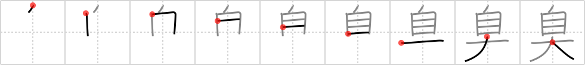

臭
← →
stinking

Reading:
On-Yomi: シュウ — Kun-Yomi: くさ.い、-くさ.い、にお.う、にお.い
Heisig story:
This character is a bit friendlier to the animal world. Our friend the St. Bernard is alive and well, its nose in the air sniffing suspiciously after something stinking somewhere or other.
Koohii stories:
1) [Christine_Tham] 30-7-2007(172): The ST. BERNARD DOG lifted his large NOSE high in the air to find out where the stinking smell comes from.
2) [ageru] 21-1-2008(54): When I is big, Ego stinking.
3) [allanh] 26-6-2008(45): I have just done a big one. It's really stinking.
4) [jannahj] 17-8-2007(33): If you put your NOSE directly on top of a ST. BERNARD, you'd surely be able to smell it's stinking wet fur.
5) [NyahK] 4-11-2009(16): Should one let oneself get too large, bodily functions may start stinking!